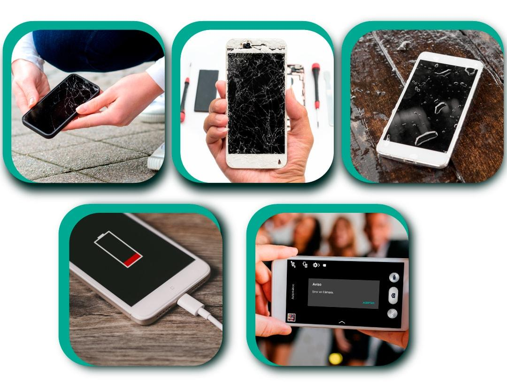
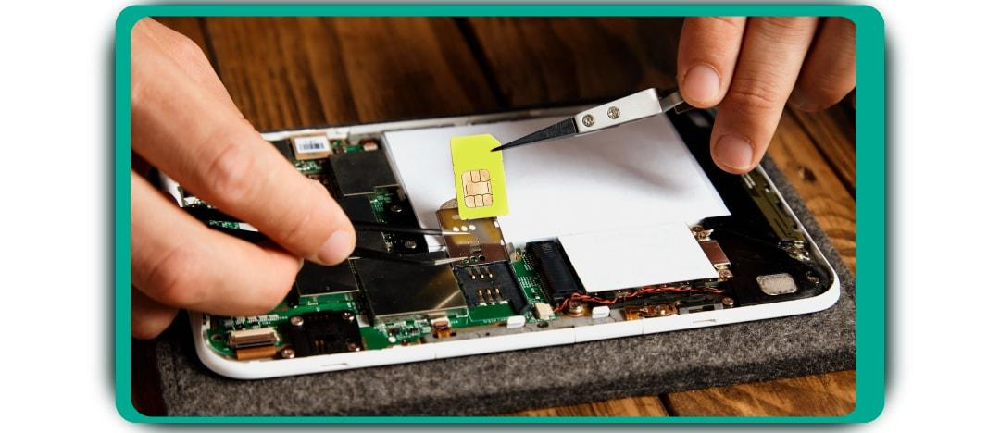

Sobre Nosotros


En Fixy Escobar nos especializamos en la reparación de teléfonos y la venta de dispositivos iPhone, Samsung y sus accesorios. Nuestro objetivo es ofrecer una experiencia excepcional a nuestros clientes, con productos de calidad y atención personalizada.
Contamos con una amplia gama de accesorios y repuestos originales. Estamos comprometidos con la innovación, el soporte post-venta y la satisfacción total de nuestros usuarios.